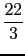
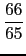
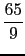

suivant: La variance : variance
monter: Les fonctions de Xcas
précédent: L'écart-type : stddev ecart_type
Table des matières
Index
L'écart-type de la population : stddevp, stdDev, ecart_type_population
stddevp (ou stdDev) a comme argument une (ou deux) liste(s) :
stddevp(l) calcule l'écart-type numérique de la population dont est
issu l'échantillon décrit
par les éléments de la liste l, de longueur n, donnée en
argument (size(l)=n) :
stddevp(l)^2=n/(n-1)* stddev(l)^2.
On tape :
stddevp(A)
On obtient :
sqrt(13)
En effet :
n=size(A)=12 et 12/11*stddev(A)^2=12/11*143/12=13.
On tape :
stddevp([[1,2],[3,4]])
On obtient :
[sqrt(2),sqrt(2)]
stddevp(l1,l2) calcule l'écart-type numérique de la population dont
est issu l'échantillon décrit par les éléments d'une
liste l1 pondérée par une autre liste l2 donnée comme
deuxième argument.
On a :
stddevp(l1,l2)^2=n/(n-1)* stddev(l1,l2)^2 si n est la
taille de l'échantillon c'est à dire si n est la somme de la liste
l2 (sum(l2)=n).
On tape :
stddevp(A,A)
On obtient :
sqrt(22/3)
En effet sum(A)=66 et
 = *
Remarque
stddev est l'écart type après division par n (taille de
l'échantillon) alors que stddevp et son synonyme stdDev (nom de
commande TI) est divisé par
n-1 et donne l'estimateur non biaisé de l'écart-type d'une population
à partir de l'écart-type calculé avec un échantillon (la division
par n-1 permet de supprimer le biais).
Pour la variance nous ne donnons qu'une commande (division par n),
mais il est très facile de définir une "variance d'échantillon"
en prenant le carré de l'écart-type stddevp.
suivant: La variance : variance
monter: Les fonctions de Xcas
précédent: L'écart-type : stddev ecart_type
Table des matières
Index
Documentation de giac écrite par Renée De Graeve